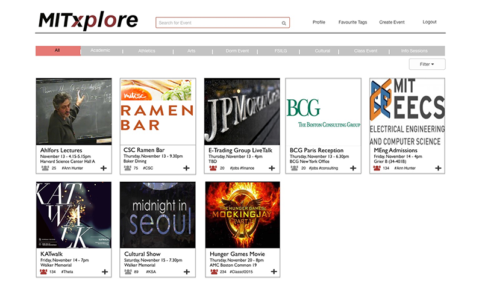
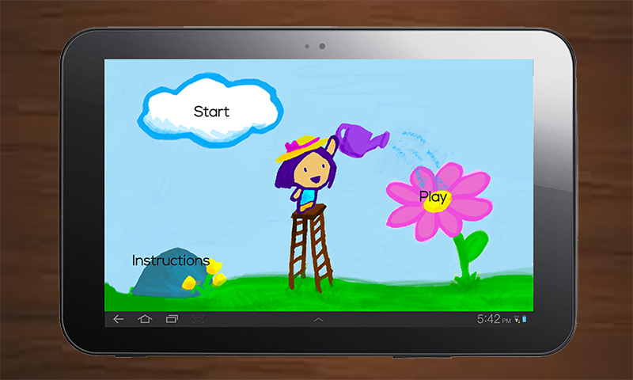

ScriptSpeak
accessible communication for everyone

Handwritten Music Reader
digitizing handwritten musical scores

MITxplore
an online hub for events at MIT

PetalPlayer
personalized online educational video learning

Design for America
a community designing for social impact

Bridging the Gap
a lightweight mobile approach to learning physics
Lighting in Uganda
hands-on education about low-cost lighting
Computer Science and You
empowering students through computer science
Society of Women Engineers
getting kids excited about STEM